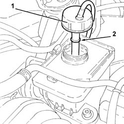

4130B14 Power assisted steering fluid reservoir CAP - R.R. - Check level and top up if necessary.
- Path
- Procedures > 41 STEERING > 4130 POWER ASSISTED STEERING > 4130B power steering hydraulic sytem > 4130B14 Power assisted steering fluid reservoir CAP - R.R. - Check level and top up if necessary.
- Kind
- repair procedure (removal / refitting; the operation number is the code)
- Applies to
- engines: 1.6 TS, 2.0 TS; all production periods
- Interactive page
- https://sloeber94.github.io/elrnDB-a147/en/#/3025294
Applies to: engines: 1.6 TS, 2.0 TS; all production periods
 Removing
Removing
 Refitting
Refitting1. Undo and remove the power assisted steering fluid reservoir cap.
2. Check that the fluid level is up to the upper notch (Max. level) on the dipstick built into the reservoir cap.

Applies to: engines: 1.6 TS, 2.0 TS; all production periods
Refitting
RemovingIf necessary, top up the level using the recommended fluid.
 | Type | Component | Name | Qty. |
|---|---|---|---|---|
- | Oli [l] | POWER ASSISTED STEERING CIRCUIT | TUTELA GI/A | 1.2 |
Refit the brake fluid reservoir cap.
Bleed the power steering system as described below.
With the front wheels raised off the ground, with the engine switched off, carry out 4-5 complete steering wheel rotation cycles (left and right).
Check and, if necessary, top up the fluid level in the reservoir.
Position the vehicle on the ground and start up the engine.
Carry out 4 - 5 complete steering wheel rotations (right and left).
Top up the fluid level in the reservoir.